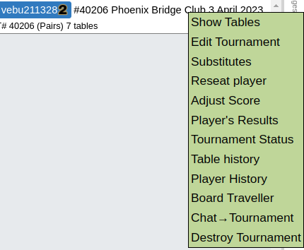
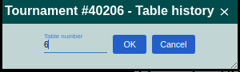
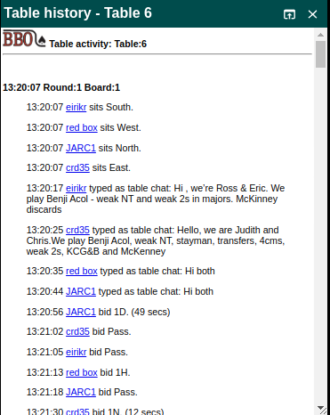

Handling Queries¶
Not all of our BBO directors are qualified EBU directors. This is acceptable as the main opportunities for player error are eliminated by the BBO process. For example, it is not possible to bid or play out of turn and revoking is not possible. However, queries do occur and this page describes the Phoenix protocol for handling them.
General¶
The club’s policy is to support BBO directors taking into account the fact that they may not be qualified directors. This includes a statement on the club website that draws attention to this and asks players to take this into account during play.
The approach that you should take to a player query will depend on its nature and the attitude of the player.
Queries that you feel competent to handle¶
If a player makes a query that you have handled satisfactorily, then generally no further action is necessary. It is good practice to take a copy of the section of the table history that includes the transaction plus any context that you feel might be relevant.
Queries that you do not feel competent to handle¶
There may arise circumstances where you do feel confident to respond to the player making the enquiry. In these cases please gather as much information as you feel relevant during chat at the table including both sides of the question if the dispute warrants. Finally inform the players that you will take advice and get back to them. Do not feel under any pressure to resolve the matter there and then.
Please take a copy of the section of the table history that includes the transaction plus any context that you feel might be relevant. This will ideally include all of the transactions while the pairs have been at that table.
Handling difficult situations¶
The nature of on-line play often makes it difficult to set and judge the tone of a text chat message. Sometimes an ironic or self deprecating remark can come over as sarcasm or arrogance. Please keep a cool head in these circumstances and reply politely and in measured tones. If necessary, employ empathy (”I do understand” or I do understand it must be frustrating”). You can always remind a player that if they are not happy with your response they can contact the Club Chair. Try to remember that any annoyance or anger is not directed at you personally as you are simply following a procedure that all players implicitly agree to by playing at the club on BBO.
Escalating queries¶
If you are not scoring, and the query might affect the scores, please make sure that the scorer is aware of the query - ideally using the director’s Whatsapp group.
The query with the relevant evidence that you have collected should be sent to the Principal Director by email. This should include:
a description of the issue;
the table history;
a link to the BBO board (see Access a user’s historical Boards).
They will review and contact the relevant parties. They should also inform the scorer who can then take the appropriate action.
Table history¶
BBO provides a detailed history of all actions at a table during a tournament. This includes timestamped entries for:
players sitting at the table;
chat;
bids;
cardplay;
claims;
results;
time taken by each player.
bbo logo Table activity: Table:6
13:20:07 Round:1 Board:1
13:20:07 aaa sits South.
13:20:07 xxx sits West.
13:20:07 bbb sits North.
13:20:07 yyy sits East.
13:20:17 aaa typed as table chat: Hi , we’re Bill & Ben. We play Benji Acol - weak NT and weak 2s in majors. McKinney discards
13:20:25 yyy typed as table chat: Hello, we are Jack and Jill. We play Benji Acol, weak NT, stayman, transfers, 4cms, weak 2s, KCG&B and McKenney
13:20:35 xxx typed as table chat: Hi both
13:20:44 bbb typed as table chat: Hi both
13:20:56 bbb bid 1D. (49 secs)
13:21:02 yyy bid Pass.
13:21:05 aaa bid Pass.
13:21:13 xxx bid 1H.
13:21:18 bbb bid Pass.
13:21:30 yyy bid 1N. (12 secs)
...
Note that the times are 6 hours behind us (probably Eastern Standard Time).
To see the table history:
click on the tournament in the Director tab;
click Table History;
enter the table number;
click on OK;

The table history gets quite long, but you can scroll to the desired section.
To save a section:
use the mouse to highlight the relevant section of the history;
right click and select copy or use<CTRL>+C;
open a text editor (e.g. Notepad);
right click and select paste or use <CTRL>+V;
save the text in a location that will be able to find (e.g. docs/bbo-logs) and use a meaningful name (e.g.
-query.txt ).